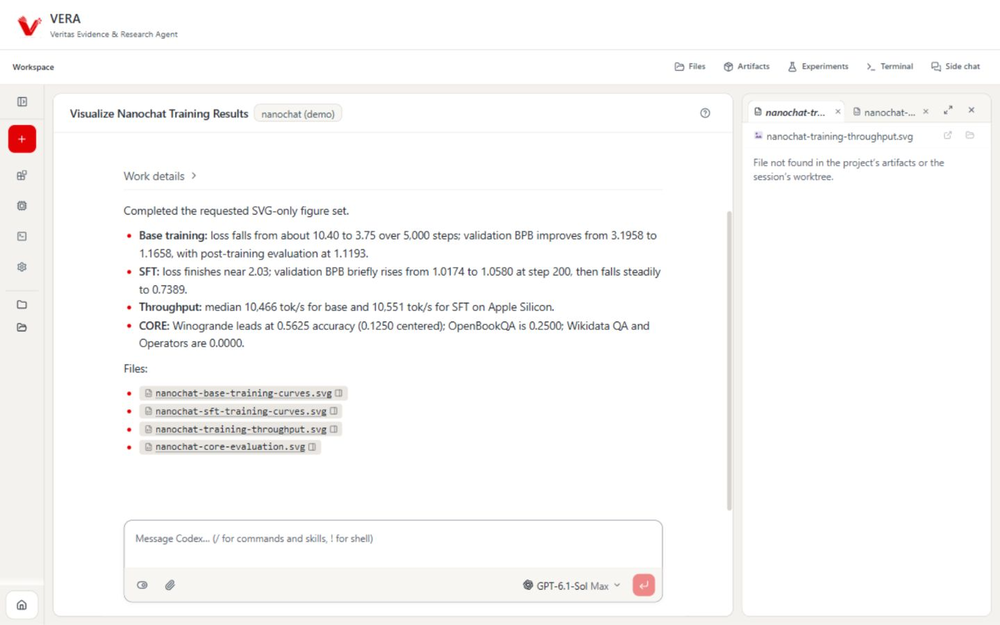

VERA · studi header
Tiga cara mengisi sisi kanan header.
Klik alternatif untuk membandingkan header di atas workspace yang sama. Warna dan identitas mengikuti VERA saat ini.
B · Utilitas globalMockup visual · header saja yang dibandingkan

VERAVeritas Evidence & Research Agent
Literature · Evidence · WritingRead critically. Write with evidence.
Current work · nanochat (demo)Visualize Nanochat Training Results
B · Utilitas global
Mengisi area kanan dengan akses Beranda, Bantuan, dan Pengaturan. Bentuknya ringkas, mudah dikenali, dan memberi alasan untuk memakai ruang header.
Pertimbangan implementasi
Dapat memakai kembali navigasi landing, dialog bantuan/demo, dan pengaturan yang sudah tersedia. Files dan Artifacts tetap berada di toolbar workspace.